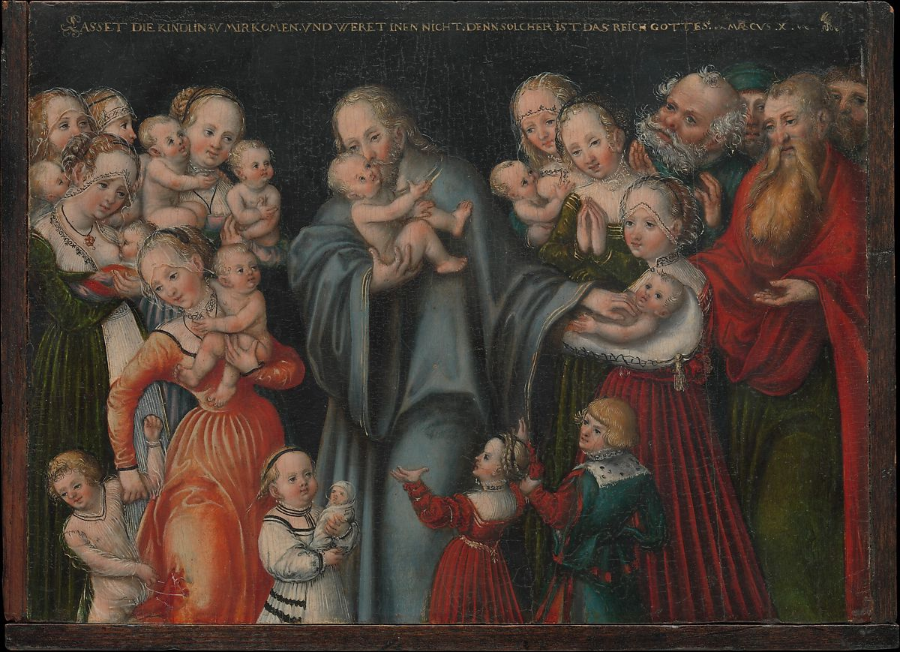

<head>
<meta charset="UTF-8" />
<meta name="keywords" content="drawing, painting" />
<meta name="description" content="drawings by Sunjy" />
<title>Sunjy</title>
<link rel="shortcut icon" type="image/x-icon" href="../../mImages/mCommon/favicon.ico" media="screen" />
<link rel="stylesheet" type="text/css" href="../../mCsses/mCommon/mCssA.css" />
<link rel="stylesheet" type="text/css" href="../../mCsses/mCommon/mCssB.css" />
<link rel="stylesheet" type="text/css" href="../../mCsses/mCommon/mCssC.css" />
<link rel="stylesheet" type="text/css" href="../../mCsses/mCommon/mCssD.css" />
<link rel="stylesheet" type="text/css" href="../../mCsses/mContent/mCssA.css" />
<link rel="stylesheet" type="text/css" href="../../mCsses/mContent/mCssB.css" />
<link rel="stylesheet" type="text/css" href="../../mCsses/mContent/mCssC.css" />
<link rel="stylesheet" type="text/css" href="../../mCsses/mContent/mCssD.css" />
</head>
<script type="text/javascript" src="../../mScripts/mContent/mContentAA.js" /></script>
<script type="text/javascript" src="../../mScripts/mContent/mContentAB.js" /></script>
<script type="text/javascript" src="../../mScripts/mContent/mContentAC.js" /></script>
<script type="text/javascript" src="../../mScripts/mContent/mContentAD.js" /></script>
<script type="text/javascript"></script> 
<script type="text/javascript">
document.write('<div class="mImgAbsolute"></div>');
/*
document.write('<p class="mFontSizeBColor" />From a white paper...</p>');
document.write('<table class="center"><tr><td>');
document.write('');
document.write('</td></tr></table>');
*/
</script>


<script type="text/javascript">
document.write('<p class="mFontSizeBColor" />Christ Blessing the Children</p>');
document.write('<p class="mFontSizeSColor" />By Lucas Cranach the Younger, ca. 1545–50. The story of Christ Blessing the Children is found in the Gospels. When children are brought to Christ for blessing, and his disciples raise objections, Christ counters with the words inscribed across the top of this panel: &#34;Suffer the little children to come unto me, and forbid them not: for of such is the kingdom of God&#34; (Mark 10:14). <br>The painting and its pendant, <i>Christ and the Adulteress</i> (the below), share the theme of the free dispensation of divine grace, a central tenet of Lutheranism. Their small size suggests that they were meant for a private setting.</p>');
document.write('<table class="center" /><tr><td>');
document.write('The painting and its pendant, <i>Christ and the Adulteress</i> (the below), share the theme of the free dispensation of divine grace, a central tenet of Lutheranism. Their small size suggests that they were meant for a private setting." />');
document.write('</td></tr></table>');
document.write('<p class="mFontSizeBColor" />Christ and the Adulteress</p>');
document.write('<p class="mFontSizeSColor" />By Lucas Cranach the Younger, ca. 1545–50. This small picture illustrates the biblical passage in which a woman accused of adultery—an offense punishable by death in Mosaic law—is brought before Christ. He responds to her accusers with the words written across the top of the painting: &#34;He that is without sin among you, let him first cast a stone at her&#34; (John 8:7). Among the many variants of the subject that were made in Cranach’s workshop, this panel is unusual because it most likely formed a pair with <i>Christ Blessing the Children</i>, displayed to the top.</p>');
document.write('<table class="center" /><tr><td>');
document.write('Christ Blessing the Children</i>, displayed to the top." />');
document.write('</td></tr></table>');
</script>


